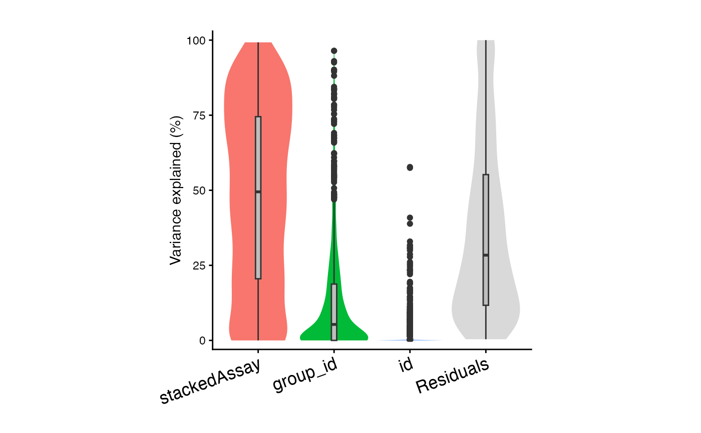
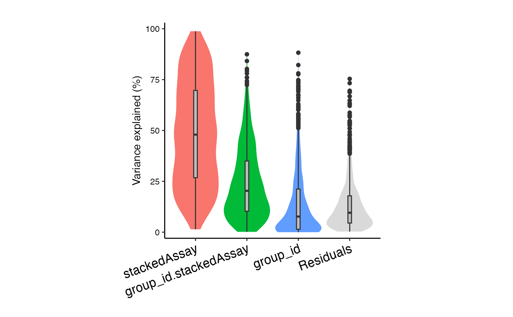
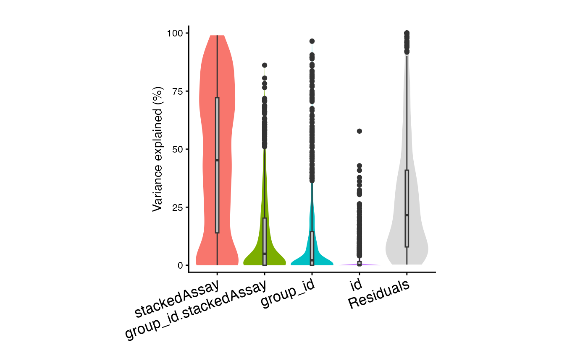
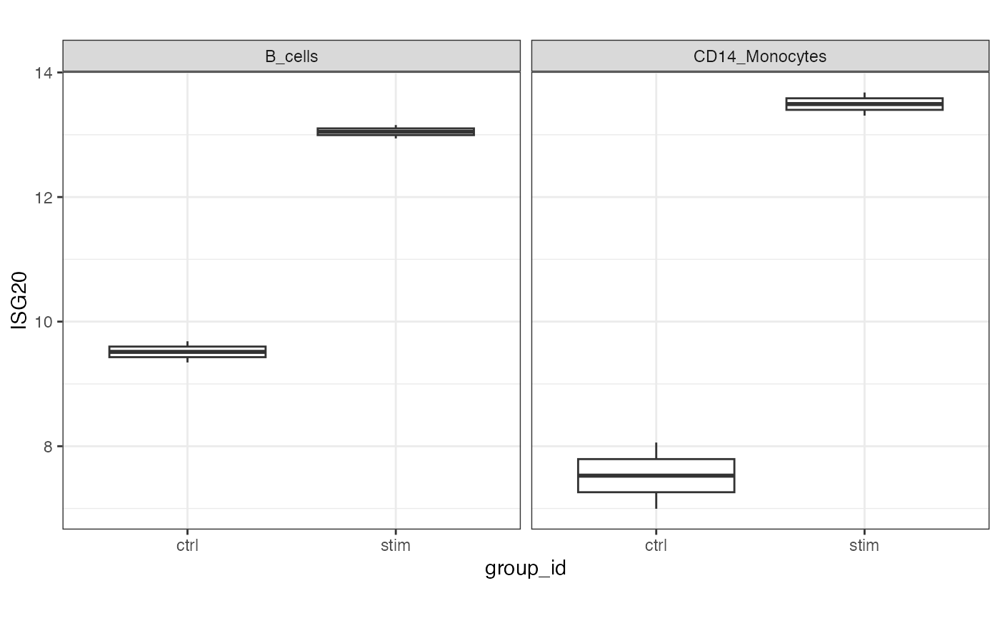

Stack assays from pseudobulk to perform analysis across cell types
Usage
stackAssays(pb, assays = assayNames(pb))Arguments
- pb
pseudobulk
SingleCellExperimentfromaggregateToPseudoBulk()- assays
array of assay names to include in analysis. Defaults to
assayNames(pb)
Value
pseudobulk SingleCellExperiment cbind'ing expression values and rbind'ing colData. The column stackedAssay in colData() stores the assay information of the stacked data.
Examples
library(muscat)
library(SingleCellExperiment)
data(example_sce)
# Replace space with underscore, and remove "+" to avoid issue downstream
example_sce$cluster_id <- gsub(" ", "_", example_sce$cluster_id)
example_sce$cluster_id <- gsub("\\+", "", example_sce$cluster_id)
# create pseudobulk for each sample and cell cluster
pb <- aggregateToPseudoBulk(example_sce,
assay = "counts",
cluster_id = "cluster_id",
sample_id = "sample_id",
verbose = FALSE
)
# Stack assays for joint analysis
pb.stack <- stackAssays(pb)
# voom-style normalization
# stackedAssay (i.e. cell type) can now be included as a covariate
res.proc <- processAssays(pb.stack, ~ group_id + stackedAssay)
#> stacked...
#> 0.068 secs
# Examine coding of covariates
# colData:
head(colData(res.proc))
#> group_id stackedAssay
#> B_cells_ctrl101 ctrl B_cells
#> B_cells_ctrl107 ctrl B_cells
#> B_cells_stim101 stim B_cells
#> B_cells_stim107 stim B_cells
#> CD14_Monocytes_ctrl101 ctrl CD14_Monocytes
#> CD14_Monocytes_ctrl107 ctrl CD14_Monocytes
# Examine coding of covariates
# metadata:
head(metadata(res.proc))
#> # A tibble: 6 × 4
#> id assay cluster_id sample_id
#> <fct> <fct> <chr> <chr>
#> 1 ctrl101 B_cells stacked B_cells_ctrl101
#> 2 ctrl107 B_cells stacked B_cells_ctrl107
#> 3 stim101 B_cells stacked B_cells_stim101
#> 4 stim107 B_cells stacked B_cells_stim107
#> 5 ctrl101 CD14_Monocytes stacked CD14_Monocytes_ctrl101
#> 6 ctrl107 CD14_Monocytes stacked CD14_Monocytes_ctrl107
# Variance partitioning analysis
# Model contribution of Donor (id), stimulation status (group_id), and cell type (stackedAssay)
form <- ~ (1|id) + (1|group_id) + (1|stackedAssay)
vp <- fitVarPart(res.proc, form)
#> stacked...
#> 9.3 secs
#>
# Summarize variance fractions across cell types
plotVarPart(sortCols(vp))

# Interaction analysis allows group_id
# to have a different effect within each stackedAssay
form <- ~ (1|id) + (1|group_id) + (1|stackedAssay) + (1|group_id:stackedAssay)
vp2 <- fitVarPart(res.proc, form)
#> stacked...
#> 9.6 secs
#>
plotVarPart(sortCols(vp2))

plotVarPart(sortCols(vp2))

# Differential expression analysis
# Testing differences between cell types
# In a real data you want to test the full model,
# but this dataset is too small
form <- ~ (1|id) + (1|group_id) + (1|stackedAssay) + group_id:stackedAssay + 0
# In this small dataset, just test simulation-by-celltype interaction term
# Here, test if the effect of stimulation (i.e. difference between stimulated and
# controls) is different between B cells and monocytes
contrasts <- c(Diff = "(group_idstim:stackedAssayB_cells - group_idctrl:stackedAssayB_cells) -
(group_idstim:stackedAssayCD14_Monocytes - group_idstim:stackedAssayCD14_Monocytes)")
form <- ~ group_id:stackedAssay + 0
fit <- dreamlet( res.proc, form, contrasts = contrasts)
#> stacked...
#> 0.16 secs
# Top genes
topTable(fit, coef='Diff', number=3)
#> DataFrame with 3 rows and 9 columns
#> assay ID logFC AveExpr t P.Value adj.P.Val
#> <character> <character> <numeric> <numeric> <numeric> <numeric> <numeric>
#> 1 stacked ISG20 3.58652 10.77255 12.7519 5.03872e-11 5.03368e-08
#> 2 stacked IFI6 7.11967 8.88258 11.9311 1.63350e-10 8.15935e-08
#> 3 stacked LY6E 4.25260 8.90161 10.9700 7.02379e-10 2.33892e-07
#> B z.std
#> <numeric> <numeric>
#> 1 15.4458 12.7519
#> 2 13.9540 11.9311
#> 3 12.7907 10.9700
# Plot example
df <- extractData(res.proc, assay = "stacked", genes = c("ISG20"))
df <- df[df$stackedAssay %in% c("B_cells", "CD14_Monocytes"),]
ggplot(df, aes(group_id, ISG20)) +
geom_boxplot() +
theme_bw() +
theme(aspect.ratio=1) +
facet_wrap( ~ stackedAssay)
